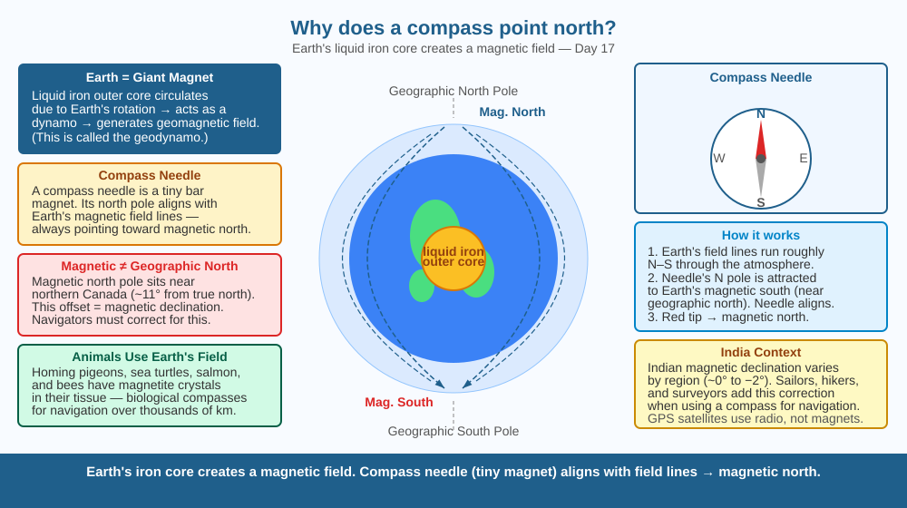

Discover why a tiny needle floating in water always swings to the same direction — and how Earth itself is one of the largest magnets in the solar system.
A compass needle can be inside a box, on a ship, in a jungle, or on a mountain. It always points roughly north. There is no wire attached to it. No one tells it which way to point. What invisible force reaches into that sealed box and pulls the needle into alignment?
Earth has a liquid iron outer core that swirls as the planet rotates. Moving molten iron carries electric charges, and moving charges create magnetic fields. These fields combine into Earth's geomagnetic field — a giant invisible field that surrounds the whole planet. It looks roughly like the field of a bar magnet tilted about 11° from Earth's rotation axis.
A compass needle is a small bar magnet (magnetised steel). Every magnet has a north pole and a south pole. Earth's magnetic field lines emerge from near the geographic south pole and re-enter near the geographic north pole. The compass needle's north-seeking pole is attracted to (and aligns with) the direction of these field lines — pointing toward magnetic north.
Key fact: Earth's magnetic north pole is near Canada, not at the geographic North Pole. The difference between magnetic north and true north at any location is called magnetic declination.
Earth's geomagnetic field is relatively weak. A nearby strong permanent magnet or large iron object generates a local field that is far stronger — it overrides Earth's field in the immediate vicinity and deflects the compass needle toward the local magnet's poles rather than toward north.
Imagine dropping a leaf on a stream. The current in the stream (Earth's magnetic field lines) pushes the leaf until it aligns with the flow. The compass needle is the leaf — it rotates until it lines up with Earth's field lines and then stays there. The stronger the field, the faster and more reliably the needle settles.
Pole naming note: Earth's geographic north is actually a magnetic south pole (it attracts the north-seeking end of a compass). Confusingly, we named the compass end that points north the "north pole," but magnetically it is attracted to a geographic-north-located magnetic south.

The diagram shows a cross-section of Earth with the liquid outer core labelled. Curved field lines emerge from the south geographic pole, arch over the surface, and re-enter near the north geographic pole. A compass on the surface is shown with its needle aligned with a nearby field line, pointing north. The 11° tilt between magnetic and geographic poles is marked.
Magnetise a sewing needle by stroking it 20 times with one pole of a fridge magnet (always in the same direction). Float it on a piece of foam in a bowl of still water. Watch it rotate to align with north. Then bring a strong fridge magnet close — watch the needle deflect away from north. Remove the magnet — it swings back. This is exactly what happens near iron ore deposits: the local rock magnetism shifts the needle.
Earth's magnetic poles wander over decades and have even reversed completely hundreds of times in geological history (the last reversal was about 780,000 years ago). Geologists can detect ancient reversals frozen in ocean-floor rocks. If Earth's poles reversed today, compasses would point south. Would birds, turtles, and salmon be confused, or would they adapt? What does this tell us about how long reversals might take?
What is the main reason a compass needle always points toward magnetic north?
Why is understanding Earth's magnetic field more useful than simply knowing a compass points north?
If you placed a compass near a strong iron bar magnet, what would you predict would happen?
The city of Chennai has a magnetic declination of about 0.5° west — almost zero. Mumbai has about 0.8° west. But in Canada, some locations have a declination of over 20°! Explain why declination varies so much from place to place, and why sailors had to look up their local declination before trusting a compass reading.
Earth's magnetic field is generated by convection currents in the liquid iron outer core, but these currents are chaotic. For the past 170 years, the strength of Earth's magnetic field has been decreasing by about 5% per century. If this trend continued for another 2,000 years, it might weaken enough to allow magnetic pole reversal. During a reversal, both poles are confused for thousands of years — during that time, compasses may be unreliable and cosmic rays would reach the surface more easily.
Earth's liquid iron outer core acts as a dynamo, creating a magnetic field. The compass needle aligns with that field. Magnetic north ≠ geographic north — there is a small offset called declination.